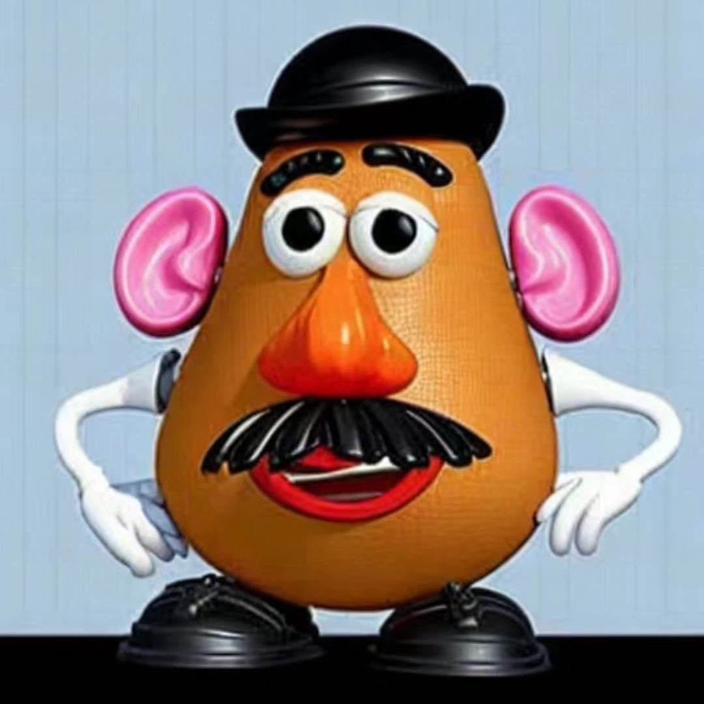

|
Yihao Quan I'm a fourth-year ungraduate student at Beijing Jiaotong University in China, where I major in Management Information system. Recently, I'm research intern at King Abdullah University of Science and Technology (KAUST) PRADA Lab. |
 |
{kind=link}
Research InterestsMy research primarily focuses on Trustworthy & Interpretability MLLMs/LLMs, with a emphasis on the following areas:
PublicationsRepresentative papers are highlighted. * = EQUAL CONTRIBUTION |

|
From Redundancy to Relevance: Information Flow in LVLMs Across Reasoning Tasks
Xiaofeng Zhang*, Yihao Quan*, Chaochen Gu, Chen Shen, Xiaosong Yuan, Shaotian Yan, Liang Xie, Wenxiao Wang, Hao Tang, Jieping Ye Github / arXiv ARR Oct., Under Review A novel perspective to enhance understanding of LVLMs and their functioning, particularly for complex reasoning tasks. |

|
EAH: Enhancing Attention Heads to Alleviate Hallucination in LVLMs
Xiaofeng Zhang*, Yihao Quan*, Chaochen Gu, Chen Shen, Xiaosong Yuan, Shaotian Yan, Jieping Ye Submitted to CVPR'25 Github A plug-and-play and training-free method showing significant hallucination-mitigating performance on different VLMs and metrics. |

|
Simignore: Enhancing LVLMs’ Complex Reasoning via Similarity Computation
Fanshuo Zeng*, Xiaofeng Zhang*, Yihao Quan, Zheng Hui, Jiawei Yao AAAI'25, Under Review Github A novel image token reduction method, Simignore, designed to enhance the complex reasoning capabilities. |
|
|
|
Feel free to steal this website's source code. |